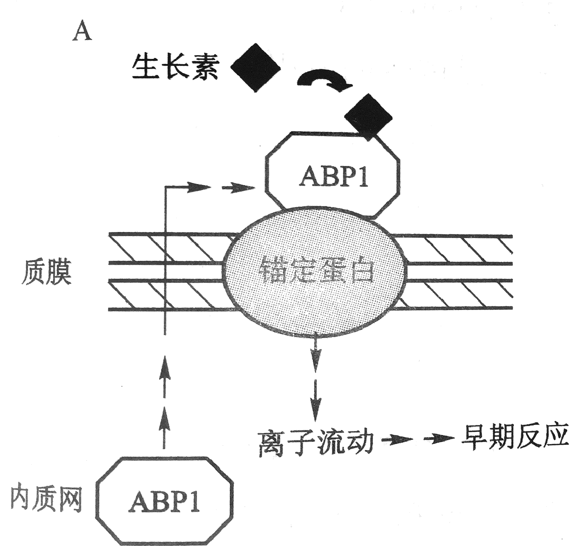
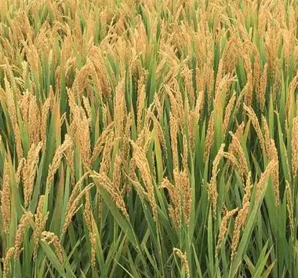
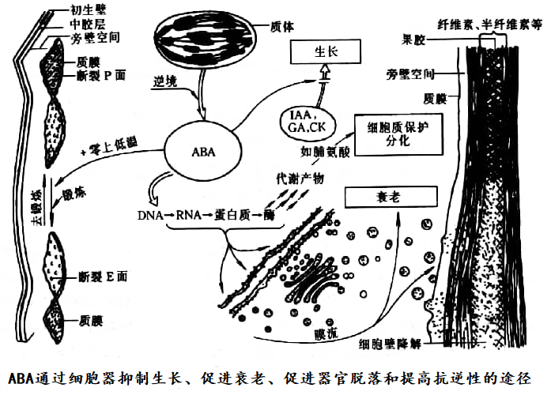

高中衔接：植物激素的核心特征
植物激素（phytohormone）vs 动物激素 vs 植物生长物质：
- 植物激素：植物体内特定部位合成、运输到作用部位、对生长发育有显著影响的微量有机物（< 1 μmol/L）
- 植物生长物质：包括植物激素 + 人工合成的植物生长调节剂（plant growth regulators, PGRs）。如 2,4-D、NAA、6-BA、乙烯利、多效唑等
- 动物激素：由内分泌腺合成，通过体液（血液）运输到靶器官发挥作用
植物激素的六大特征：
- ① 内生性：植物体内合成（非外加）
- ② 可移动性：可从合成部位运输到作用部位
- ③ 微量高效性：极低浓度即可产生明显生理效应
- ④ 调控性：不直接参与营养物质代谢，仅起信号调控作用
- ⑤ 多效性（pleiotropy）：同一种激素可在不同部位产生不同效应（IAA：低浓度促进生长、高浓度抑制；茎尖促伸长、根尖抑伸长）
- ⑥ 协同性 / 拮抗性：不同激素间可相互协同或拮抗（GA + IAA 协同促进伸长；IAA 高浓度诱导 ETH，ETH 又反馈抑制 IAA）
"九大植物激素"（经典）vs "新型激素"：
| 分类 | 激素 | 主要发现者/年代 | 核心功能 |
|---|---|---|---|
| 经典激素（"五大激素"） | 生长素（IAA, Auxin） | Charles Darwin 1880 / F.W. Went 1928 | 伸长生长、向性、顶端优势、维管分化 |
| 赤霉素（GA） | 黑泽英一 1926 / 薮田贞治郎 1938 | 伸长、打破休眠、诱导抽薹、催熟 | |
| 细胞分裂素（CTK） | F. Skoog / C. Miller 1955 | 细胞分裂、叶绿体发育、延缓衰老 | |
| 脱落酸（ABA） | P.F. Wareing / F.T. Addicott 1963-65 | 抑制生长、促进休眠、抗逆 | |
| 乙烯（ETH, C₂H₄） | H.H. Cousins 1910（气） / R.E. Burg 1924（催熟） | 催熟、衰老、脱落、三重反应 | |
| 新型激素 | 油菜素甾醇（BR） | J.W. Mitchell 1970 / M.D. Grove 1979 | 伸长、抗逆、维管分化 |
| 水杨酸（SA） | J. Brown 1886 / 多种功能 | 抗病（系统获得抗性 SAR）、热生花 | |
| 茉莉酸（JA） | E. Demole 1962 / D.F. Houston 1971 | 抗虫、防御反应、机械伤害 | |
| 独脚金内酯（SL） | C.E. Cook 1966 / R.P. Walker 1972 | 分枝抑制、寄生植物种子萌发 |
"五大激素"在中国教材中常被简化为：生长素 + 赤霉素 + 细胞分裂素 + 脱落酸 + 乙烯（"五大经典激素"），这与全球教课书基本一致。新型激素 BR、SA、JA、SL 在近 30 年陆续确立。
生长素（Auxin）：发现、生物合成、信号转导与极性运输
生长素发现史（4 个关键实验）：
- ① 1880 Darwin 父子的"金丝雀草胚芽鞘"实验：单侧光照射时，胚芽鞘向光弯曲；切去鞘尖后不弯曲。提出"某种信号从鞘尖向下传递"
- ② 1913 Boysen-Jensen 的"琼脂片实验"：在鞘尖和鞘基之间插入明胶或云母片 → 明胶允许信号通过，云母阻隔 → 信号是"化学物质"而非"电信号"
- ③ 1928 F.W. Went 的"燕麦弯曲实验"：把切下的鞘尖放在琼脂块上一段时间 → 把琼脂块放在去尖的胚芽鞘顶端 → 琼脂块中的"物质"能使胚芽鞘弯曲生长。这是植物激素研究中最著名的实验——首次分离出"生长素"
- ④ 1934 Kögl 分离出 IAA（吲哚-3-乙酸）：从人尿中分离出 IAA；后来证明 IAA 是植物中天然生长素
生长素的"中心法则"——两重性：
- 促进（低浓度）：< 0.1 μmol/L 促进伸长，茎尖/根尖除外
- 抑制（高浓度）：> 10 μmol/L 抑制伸长，根对 IAA 最敏感（< 0.01 μmol/L 即可抑制）、茎最不敏感（> 10 μmol/L 才抑制）
根、芽、茎对 IAA 的敏感度排序：根 > 芽 > 茎。这解释了"双 S 型"剂量-效应曲线：同一浓度下 IAA 对不同器官可能促进或抑制；除草剂 2,4-D 利用"根最敏感"特性选择性杀死双子叶杂草。
IAA 的生物合成：
- 主路径（TAA/YUCCA 路径）：色氨酸（Trp）→ 吲哚-3-丙酮酸（IPA, 由 TAA/TAR 转氨酶催化）→ IAA（由 YUCCA 蛋白催化，是黄素单加氧酶 FMOs）
- 次要路径：色氨酸 → 吲哚-3-乙醛肟（IAOx, CYP79B 催化）→ IAA（肟水解）
- 色氨酸非依赖路径：拟南芥 trp 突变体中仍可检测到 IAA，提示此路径存在
IAA 合成部位：① 茎尖分生组织（SAM）是主要合成部位；② 幼嫩叶片；③ 发育中的种子（未成熟种子 IAA 含量极高）；④ 根尖（少量）。
IAA 储存形式：游离态 IAA 浓度很低（< 1 μmol/L），多数 IAA 与氨基酸/糖结合成"结合态 IAA"（如 IAA-Glc、IAA-Ala、IAA-Asp）作为储存或失活形式。结合态可被水解为游离态，调节活性 IAA 水平。
IAA 的极性运输：IAA 是唯一具有极性运输的激素——从形态学上端→下端（基部方向）。具体机制：
- ① 化学渗透极性扩散假说（chemiosmotic polar diffusion hypothesis）（1970s Rubery & Sheldrake 独立提出）：在顶端酸性（pH 5）胞壁中 IAA 主要以 IAAH 形式存在（脂溶性），可自由扩散跨膜进入细胞；在基部中性（pH 7）胞质中 IAA 主要以 IAA⁻ 形式存在（不能自由跨膜），必须通过载体蛋白外运
- ② 顶端输入载体 AUX1/LAX 家族：H⁺-IAAH 同向转运体，在顶端负责 IAA 入胞
- ③ 基部输出载体 PIN 家族：PIN 蛋白定位在细胞"基部"细胞膜上，负责 IAA⁻ 出胞。PIN 蛋白的"鼓极性定位"决定了 IAA 极性方向（PIN 突变体极性消失）
- ④ ABCB/PGP 蛋白：ATP-binding cassette B 类转运蛋白，ATP 驱动 IAA 主动运输（不依赖质子梯度）
极性运输的速率与距离：约 1 cm/h（茎中），只通过薄壁细胞（皮层、维管束薄壁）进行，不通过韧皮部或木质部运输。这一速度比扩散快、比筛管运输慢。
IAA 的信号转导（TIR1-Aux/IAA-ARF 通路）：
- ① TIR1/AFB 受体：F-box 蛋白（SCFTIR1 泛素连接酶复合物的一部分）
- ② Aux/IAA 抑制子：在 IAA 缺乏时，Aux/IAA 与 ARF 转录因子结合形成异二聚体，抑制 ARF 的转录激活活性
- ③ IAA 介导的降解：IAA 作为"分子胶水"（molecular glue）连接 TIR1 和 Aux/IAA → SCFTIR1 泛素化 Aux/IAA → 26S 蛋白酶体降解
- ④ ARF 激活：Aux/IAA 降解后，ARF 释放 → ARF 形成同二聚体 → 结合生长素响应元件 AuxRE（TGTCNC）→ 启动下游基因（如 SAUR、GH3、Aux/IAA 自身）
IAA 的快速反应（tens of seconds）：质外体 H⁺-ATPase 激活（酸性生长理论）→ 质外体酸化 → 激活 expansin（细胞壁松弛蛋白）→ 细胞壁松弛 → 细胞膨压驱动下伸长。这是 IAA 的"快速反应"通路（不通过 TIR1 受体，而通过质膜上的 ABP1（auxin-binding protein 1）或 TMK1 受体）。
IAA 的极性运输抑制剂：NPA（1-N-naphthylphthalamic acid）、TIBA（2,3,5-triiodobenzoic acid）—— 抑制 PIN 介导的极性运输，破坏顶端优势、向性等。农业应用：NPA 防止落果（如苹果采前落果）。
赤霉素（GA）：生物合成、DELLA 蛋白降解与"绿色革命"
赤霉素的发现史：
- 1926 黑泽英一：水稻"恶苗病"——病株徒长但不开花。从病原真菌 Gibberella fujikuroi（藤仓赤霉菌）中分离出促进生长的物质
- 1938 薮田贞治郎：分离出活性成分，命名为"gibberellin"
- 1956 西方科学家：从菜豆未熟种子中也分离出 GA，证明 GA 是植物内源激素
GA 是一大类化合物：至今已发现 130 多种 GA，命名 GA1-GA136。结构为赤霉烷骨架（含 4 环骨架，C₉-C₁₀ 之间为内酯环）。但只有少数 GA（如 GA1、GA3、GA4、GA7）具有生物活性，其他为合成前体或代谢产物。
GA 的合成部位：① 幼叶；② 未成熟种子；③ 根尖；④ 茎尖。GA 在合成后通过木质部向上运输（与 IAA 极性运输向下相反）。
GA 核心合成路径：前体 GGPP → CPS（贝壳杉烯合酶）→ KS（贝壳杉烯合酶）→ ent-贝壳杉烯 → KO → KAO → GA₁₂（活性 GA 前体）→ GA₁₃/GA₅₃ → 13-H（非活性）→ 13-氧化（活性）→ GA₄/GA₁（活性）
GA 合成关键酶：CPS、KS、KO、KAO、GA20ox、GA3ox（最后两个是 2-酮戊二酸/FG 双加氧酶家族）。
DELLA 蛋白——GA 信号的核心"刹车"：DELLA 蛋白是 GRAS 家族转录调节子，因 N 端的 DELLA 序列（Asp-Glu-Leu-Leu-Ala）命名。DELLA 蛋白是 GA 反应的"负调控子"——在 GA 缺乏时抑制伸长，GA 存在时被降解。
GA 信号转导（"降解-释放"机制）：
- ① GA 受体 GID1（GA-INSENSITIVE DWARF 1）：可溶性蛋白，识别活性 GA 后构象变化 → 暴露结合表面
- ② GID1-GA-DELLA 复合物：GID1-GA 与 DELLA 的 TVHYNP 结构域结合
- ③ SCFGID2/SLY1 泛素化：F-box 蛋白 GID2/SLY1 招募 DELLA → 26S 蛋白酶体降解 DELLA
- ④ 下游生长反应：DELLA 降解后 → 释放对 PIFs（光敏色素互作因子）的抑制 → PIFs 激活伸长相关基因
"绿色革命"基因 = DELLA：1960s Norman Borlaug 的"绿色革命"将小麦/水稻从高产中导入 DELLA 突变体（"矮化"基因）：
- 小麦：Rht-B1b/Rht-D1b（Reduced height 1）—— DELLA 蛋白 N 端 DELLA 序列缺失（"GA 不敏感"突变）→ 即使 GA 也不能降解 DELLA → 持续抑制伸长 → 矮化
- 水稻：sd1（semi-dwarf 1）—— GA 合成酶 GA20ox 突变 → GA 合成不足 → 矮化
矮化育种的意义：① 耐肥抗倒——化肥用量大时，矮化品种不倒伏（高杆倒伏严重）；② 收获指数高——矮化品种把更多同化物运到籽粒；③ 全球小麦/水稻产量因此翻倍。
GA 的"两重性"：
- 促进（"基本"）：① 节间伸长（最强效应）；② 种子萌发（打破休眠）；③ 诱导抽薹（长日植物）；④ 雄花分化（玉米、瓜类）；⑤ 淀粉酶合成（大麦糊粉层）；⑥ 果实发育（葡萄无籽化）；⑦ 提高坐果率（梨、杏、苹果）
- 抑制：① 衰老（与 ABA 协同）；② 不定根形成（与 IAA 协同时除外）
GA 的农业应用：① 大麦发芽制麦芽：GA 喷洒 → 加速淀粉酶合成 → 快速糖化；② 葡萄无籽化（GA 3）：盛花期前喷施 → 形成无籽果实；③ 杂交水稻制种：喷施 GA 调节父母本花期相遇 + 促进不育系抽薹；④ 解除休眠：马铃薯、苹果、梨等休眠期喷施 GA 提早出芽；⑤ 芹菜增重：GA 喷洒使叶柄伸长增重。
GA 合成抑制剂：① 多效唑（paclobutrazol, PP333）—— 抑制 GA20ox → 延缓伸长，常用于花卉、盆景控长；② 矮壮素（chlormequat, CCC）—— 抑制 KS 阶段；③ 嘧啶醇（ancymidol）—— 抑制 KA 阶段。
细胞分裂素（CTK）：发现、合成、信号与"老叶逆转"
细胞分裂素的发现：1913 年，Gottlieb Haberlandt提出"伤口处可能产生促进细胞分裂的物质"；1955 年，F. Skoog 和 C. Miller从鲱鱼精子 DNA 中分离出激动素（kinetin, KT）（6-呋喃甲基氨基嘌呤），发现其促进细胞分裂作用。1963 年，Miller 和 Letham从未成熟玉米种子（Zea mays）中分离出第一个天然 CTK，玉米素（zeatin, ZT）。
CTK 的结构特征：嘌呤环（6-氨基嘌呤）+ N⁶ 位置侧链。天然 CTK 多为顺式（cis）构型；人工合成 CTK 常为反式（如激动素、6-BA、TDZ）。
CTK 的分类：
- 天然 CTK：玉米素、反式-玉米素（tZ）、二氢玉米素（DHZ）、异戊烯腺嘌呤（iP）
- 人工合成 CTK：激动素（KT）、6-苄氨基嘌呤（6-BA、BAP）、噻苯隆（TDZ）
CTK 合成路径：① tRNA 分解路径（次要）：tRNA 中含有顺式玉米素结构，被分解后释放；② IPT 路径（主要）：ATP/ADP + DMAPP → 异戊烯基（iP）→ 经 CYP735A（细胞色素 P450）→ tZ 和 DHZ。IPT（isopentenyl transferase）是 CTK 合成限速酶。
CTK 合成部位：① 根尖（主要）——根尖是 CTK 的"内分泌腺"；② 茎尖；③ 发育中的种子（果实）；④ 伤流液中含 CTK → 反映根尖合成能力。
CTK 的信号转导（双组分磷酸接力）：CTK 信号是植物特有的"双组分系统（two-component system）"，与细菌/真菌的双组分信号系统同源：
- ① 受体 AHK2/3/4（拟南芥组氨酸激酶）：定位在细胞质膜和内质网，N 端含 CHASE 结构域（结合 CTK）
- ② 自磷酸化：CTK 结合 → 受体二聚化 → 组氨酸（H）自磷酸化
- ③ 磷酸接力：磷酸从受体 His → AHP（Arabidopsis Histidine Phosphotransfer protein）Asp
- ④ 核转移 + 响应调节子：AHP 进入细胞核 → 把磷酸转到响应调节子 ARR-B 的 Asp（接受结构域）
- ⑤ 转录激活：ARR-B（type-B response regulator）激活下游基因（含 type-A ARR）
CTK 生理功能：
- ① 细胞分裂：与 IAA 协同（"CTK/IAA"比例控制分化方向）
- ② 叶绿体发育：CTK 促进叶绿素合成，叶绿体类囊体形成
- ③ 延缓衰老（抗衰）：CTK 抑制蛋白质分解 → 叶片保鲜（如切花）
- ④ 顶端优势解除：根尖合成的 CTK 向上运输到侧芽，拮抗 IAA 对侧芽的抑制
- ⑤ 抗逆：干旱、高盐、低温时 CTK 降低（与 ABA 相反）
- ⑥ 雌性化效应：CTK 处理可促雌花分化
"老叶逆转"现象：将离体叶浸泡在含 CTK 的溶液中 → 老叶转绿、延缓黄化。原理：CTK 抑制蛋白质分解 + 维持叶绿体活性 + 吸引氨基酸从衰老组织回流到处理部位。这是"绿色孤岛"（green island）现象的机理——某些病原菌分泌 CTK 维持侵染点周围组织绿色，延长菌源营养供应。
脱落酸（ABA）：结构、信号转导、应激与"PP2C-SnRK2 通路"
脱落酸的发现：1963 年，P.F. Wareing等从桦树休眠芽中分离出"β-抑制物"（β-inhibitor）；1965 年，F.T. Addicott等从棉铃中分离出促进脱落的物质"脱落素 II"（abscisin II）。后证明两者均为同一物质，1967 年统一命名为 ABA（abscisic acid）。
ABA 的结构：15 个碳的倍半萜（C₁₅ 化合物），含 1 个环己烯环 + 1 个羧基 + 1 个双键。S-ABA 具高活性，R-ABA 活性低。2-cis, 4-trans-ABA 是天然活性构型。
ABA 合成路径（"间接" C₁₅ 路径）：① C₄₀ 类胡萝卜素路径（主）：玉米黄质 → 紫黄质 → 9-顺式-新黄质 → 黄氧素（XAN）→ ABA-醛 → ABA（关键酶：NCED, AAO, MoCo 氧化酶）；② C₁₅ 直接路径（次）：法尼基焦磷酸（FPP）直接环化 → ABA（仅在某些病原菌中）。
ABA 合成部位：① 根冠（响应重力）；② 成熟叶片；③ 未成熟种子（种子成熟时 ABA 大量积累→"种子脱水耐性"）；④ 伤流液中（反映根尖合成能力）。
ABA 的"应激激素"角色：ABA 是植物对逆境的"中央响应"激素。在干旱、高盐、低温、伤害、病原菌感染时 ABA 水平迅速上调（10-30 倍），介导：
- ① 气孔关闭（最快速反应，分钟级）
- ② 渗透调节物质积累（脯氨酸、可溶性糖）
- ③ 脱水耐性蛋白合成（LEA 蛋白）
- ④ 休眠诱导（种子、芽）
- ⑤ 生长抑制
ABA 的信号转导（PYR/PYL/RCAR-PP2C-SnRK2 通路）：
- ① 受体 PYR/PYL/RCAR（START 域蛋白）：可溶性细胞质蛋白，结合 ABA 后构象变化
- ② ABA-PYR-PP2C 复合物：ABA + PYR 招募 PP2C（type 2C protein phosphatase，ABI1/ABI2/HAB1/PP2CA 是关键负调控子）
- ③ 解除抑制：PP2C 在无 ABA 时抑制 SnRK2（Snf1-Related protein Kinase 2）激酶活性。ABA + PYR 与 PP2C 结合后，解除 PP2C 对 SnRK2 的抑制
- ④ SnRK2 激活下游：SnRK2（OST1/SnRK2.6 在保卫细胞中）磷酸化下游底物：① SLAC1（保卫细胞阴离子通道）→ 阴离子流出 → 保卫细胞失水 → 气孔关闭；② ABF/AREB/ABI5 bZIP 转录因子 → 启动 ABA 响应基因
ABA 与气孔关闭：气孔关闭是 ABA 最经典的快速反应。机制：ABA 启动 → 保卫细胞内 Ca²⁺ 升高 → 活化 CDPK/CIPK 激酶 → SLAC1 通道磷酸化打开 → Cl⁻/malate²⁻ 流出 → 保卫细胞水势↑ → K⁺ 流出 → 保卫细胞失水 → 气孔关闭。OST1 是这一通路的核心激酶，ost1 突变体气孔不响应 ABA → 严重萎蔫。
ABA 与种子休眠：① 种子发育后期 ABA 上升（由母本 + 胚胎合成）→ 抑制胚胎过早萌发（"胎萌"，vivipary）；② 玉米 vp（viviparous）系列突变体不能合成 ABA → 胎萌（穗上发芽）；③ ABA 维持种子在干燥期的脱水耐性（合成 LEA 蛋白）。
ABA 的"两重性"：
- 促进（"应激"）：① 休眠（种子、芽）；② 叶片衰老；③ 果实成熟（与乙烯协同）；④ 抗逆（抗寒/旱/盐）；⑤ 离层形成（与乙烯协同）；⑥ 块茎形成（马铃薯）
- 抑制：① 生长（拮抗 GA、IAA、CTK）；② 萌发（抵消 GA 的萌发促进）；③ 气孔开放（拮抗 CTK 开放气孔的效应）
ABA 与 GA 的"拮抗"：ABA 与 GA 在种子休眠-萌发、气孔开闭、植物抗逆中相互拮抗——ABA 抑制萌发，GA 促萌发；ABA 关气孔，GA 升 CTK 促气孔开。ABA/GA 比例是种子从休眠转向萌发的"分子开关"。
农业应用：① 水稻穗上发芽（"胎萌"）：ABA 合成或信号缺陷导致，育种上选高 ABA 含量品系；② 果实保鲜：ABA 喷洒催熟（如葡萄采后）；③ 种子贮藏：ABA 维持种子休眠期；④ 抗逆种衣剂：ABA 喷洒或包衣种子提高抗逆能力。
乙烯（ETH）：唯一气体激素、信号转导与"三重反应"
乙烯的发现史：
- 1901 Dimitry Neljubow：发现煤气中的"气体"对豌豆幼苗有"三重反应"（矮化、横向膨大、负向地性消失）
- 1910 H.H. Cousins：发现成熟的橘子和苹果释放"挥发性气体"催熟香蕉
- 1934 R. Gane：鉴定出这种气体是乙烯 C₂H₄
- 1966 提纯：提纯为植物激素
乙烯的独特性：结构最简单的激素（C₂H₄，CH₂=CH₂）；唯一的"气体激素"（沸点 -104°C，常温常压下为气体）；不需要载体运输，可自由扩散跨膜。
乙烯的"三重反应"（triple response）—— 黑暗下黄化幼苗的反应：
- ① 矮化：下胚轴伸长抑制（缩短）
- ② 横向膨大：下胚轴变粗（径向膨大）
- ③ 偏上性（diageotropism）：下胚轴水平生长（失去负向地性）
- ④ 顶端弯钩加剧：增加对弯钩的保护（防止出土损伤）
乙烯合成（Yang 循环）：甲硫氨酸（Met）→ S-腺苷甲硫氨酸（SAM, by SAM synthetase）→ ACC（1-氨基环丙烷-1-羧酸, by ACC synthase, ACS）→ 乙烯 + HCN + CO₂（by ACC oxidase, ACO）。ACS 是乙烯合成的限速酶。
乙烯合成部位：① 成熟果实；② 老叶；③ 茎节点（"双层筛管"调节）；④ 根尖；⑤ 应激部位。
乙烯的信号转导（"双组分" + "EIN3 中心" 通路）：
- ① 受体 ETR1/ETR2/ERS1/ERS2/EIN4：定位在内质网膜，5 个同源受体（拟南芥），以二聚体形式与乙烯结合，His 激酶活性
- ② 无乙烯时：受体激活下游 CTR1（Raf-like Ser/Thr 激酶，负调控子） → 磷酸化 EIN2（ER 跨膜蛋白）→ EIN2 被 26S 降解或失活
- ③ 有乙烯时：乙烯结合 ETR1 → 受体失活 → CTR1 不能激活 → EIN2 稳定 → EIN2 的 C 端（EIN2-C）被蛋白酶切割进入细胞核
- ④ EIN3/EIL1 激活：EIN2-C 抑制 EIN3 binding F-box 蛋白（EBF1/2）的翻译 → EIN3/EIL1（转录因子）积累 → 启动乙烯响应基因（如 ERF1、EDF1）
ETR1 的"负调控"特殊性：受体 ETR1 是乙烯响应的负调控子——这与其他激素（IAA 的 TIR1 是正调控子）相反。etr1 突变体（受体失活）→ 持续无"无乙烯"信号 → CTR1 持续激活 → 不响应乙烯（组成型"无乙烯"反应）；etr1 显性突变（受体不能结合乙烯）则持续激活，导致组成型乙烯反应。
乙烯信号的"空气传播"——植物间通讯：乙烯可在植物间作为"警报信号"传播。植物被昆虫啃食释放乙烯 → 邻近植物诱导防御反应（JA 通路激活）。这是植物间化学通讯的经典案例。
乙烯的生理功能：
- ① 催熟：呼吸跃变型果实（香蕉、苹果、番茄）成熟期大量产生乙烯→"自我催化"催熟。"一个苹果坏一筐"就是这个原理
- ② 衰老：叶片、花瓣衰老（叶绿体破坏、膜脂过氧化、DNA 断裂）
- ③ 脱落：离层形成 → 叶片/果实脱落（与 ABA 协同）
- ④ 偏上性：叶柄/茎部的不对称生长（淹水时促进茎伸长叶柄上翘）
- ⑤ 根毛发育：促进根毛分化（乙烯与生长素互作）
- ⑥ 性别分化：乙烯利（CEPA）可诱导瓜类雌花分化（乙烯利的本质是释放乙烯的化合物）
- ⑦ 通气组织形成：水稻、玉米等水生植物在淹水时，茎基部形成通气组织（皮层细胞程序性死亡）
"呼吸跃变"vs "非呼吸跃变"：
- 呼吸跃变型：成熟期有明显的"呼吸高峰"，对乙烯处理超敏感（自催化产生乙烯）。如香蕉、苹果、番茄、鳄梨、芒果
- 非呼吸跃变型：成熟期无明显呼吸高峰，对乙烯反应迟钝（不能自催化）。如柑橘、葡萄、草莓、樱桃
农业应用：① 催熟：番茄、香蕉采后用乙烯利（CEPA）处理；② 苹果贮藏：1-MCP（1-甲基环丙烯）—— 竞争性抑制乙烯受体，保鲜数月；③ 棉花采收：脱叶催熟棉叶（便于机械化采收）；④ 橡胶增产：乙烯利处理橡胶树促进产胶；⑤ 水稻/玉米抗倒伏：抗乙烯品系（ACO/ACS 突变） 节间伸长更慢，茎基部粗壮。
新型激素：油菜素甾醇、水杨酸、茉莉酸、独脚金内酯
BR（油菜素甾醇 / brassinosteroids）：BR 是第六大类植物激素（甾醇类），1970 年 Mitchell 等从油菜（Brassica napus）花粉中分离。BR 在极低浓度（< nM）下促进伸长、抗逆、抗病。
BR 的合成：① 醋酸甲羟戊酸（MVA）路径；② 甲瓦龙酸（mevalonic acid）→ IPP → 法尼基焦磷酸（FPP）→ 角鲨烯（squalene）→ 环阿屯醇（cycloartenol）→ 菜油甾醇（campesterol）→ 多种 BR（包括 BR1（brassinolide））。BR1 是活性最高的 BR。
BR 信号（BRI1-BZR1/BES1 通路）：
- ① 受体 BRI1（Brassinosteroid Insensitive 1）：富亮氨酸重复（LRR）受体激酶（与 FLS2/PEP1 等同属 LRR-RLK 家族）
- ② 共受体 BAK1（BRI1-Associated Kinase 1）：无 BR 时 BKI1（BRI1 Kinase Inhibitor 1）与 BRI1 结合抑制；有 BR 时，BR → BRI1 构象变化 → 释放 BKI1 → BAK1 招募 → BRI1-BAK1 互磷酸化
- ③ BSK 激活：BRI1 磷酸化 BSK（BR-Signaling Kinase）→ BSK 与 BSU1（BRI1 Suppressor 1，磷酸酶）结合并磷酸化 BSU1
- ④ BIN2 失活：BSU1 去磷酸化 BIN2（GSK3 类激酶，负调控）→ BIN2 失活
- ⑤ BZR1/BES1 激活：BIN2 失活后 → BZR1/BES1（转录因子）去磷酸化 → 进入细胞核 → 结合 BRRE（BR Response Element）→ 启动伸长基因
BR 的功能：① 伸长（细胞膨大）；② 抗逆（耐盐、耐旱）；③ 维管分化；④ 光形态建成（抑制黄化）；⑤ 雄性育性（BR 缺陷的 det2 突变体雄性不育）。
SA（水杨酸 / salicylic acid）：SA 邻羟基苯甲酸，结构最简单（苯甲酸的羟基取代物），是植物"系统性获得抗性（SAR）"的关键信号分子。
SA 合成：① 苯丙氨酸解氨酶（PAL）路径：苯丙氨酸 → 反式肉桂酸 → 苯甲酸 → SA（主路径）；② 异分支酸合酶（ICS/SID2）路径：分支酸 → 异分支酸 → SA（病原菌诱导的"应激"主路径）。
SA 的核心功能——系统获得抗性（SAR）：
- ① 病原菌侵染位点（局部）：病原菌分子（PTI/ETI）→ ICS 大量表达 → SA 局部累积
- ② 信号传递（系统）：SA 通过韧皮部传递到全株（"系统信号"）
- ③ 远处（未感染）部位：SA 触发 PR 蛋白（病程相关蛋白）积累 + 防御基因激活
- ④ NPR1（Nonexpressor of PR 1）：SA 受体（NPR1 蛋白含 BTB + Ankyrin 域），与 SA 结合后构象变化 → 进入细胞核 → 与 TGA 转录因子结合 → 启动 PR-1 等基因
SA 与其他激素的"权衡"：① SA 抑制 JA 通路（SA-JA 拮抗）——SA 激活的 NPR1 抑制 JA 关键转录因子 MYC2；② SA 与 ABA 协同（抗旱）；③ SA 抑制 IAA 通路（生长抑制 → 把资源从生长转向防御）。
SA 的非抗病功能：① 气孔开闭：SA 促气孔关闭（与 ABA 协同）；② 热生成（thermogenesis）：天南星科佛焰花序 SA 介导 AOX 表达 → 抗氰呼吸产热；③ 开花调控：拟南芥低温开花（春化）+ 短日成花中 SA 水平上升（与 FT 表达相关）；④ 抗盐：NaCl 胁迫诱导 SA 上升。
JA（茉莉酸 / jasmonic acid）：JA 是植物对昆虫和伤害的"防御激素"，含环戊酮骨架 + 戊二烯侧链。MeJA（茉莉酸甲酯）有挥发性，可在植物间和植物-昆虫间传递信号。
JA 合成（"十八烷路径"）：① 亚麻酸（α-LeA，从膜脂释放）→ 13-LOX 脂氧合酶 → 13-HPOT → AOS（丙二烯氧化物合酶） → 12,13-EOT → OPR3（OPDA 还原酶） → OPC-8 → 3 次 β-氧化 → JA。MeJA 是 JA 的甲基化形式（更具挥发性）。
JA 信号（JAZ-COI1 通路）：
- ① 受体 COI1（F-box 蛋白）：F-box 蛋白组成 SCFCOI1 复合物（与 IAA 的 SCFTIR1 类似）
- ② 抑制子 JAZ（JA ZIM-domain）：无 JA 时 JAZ 与 MYC2 等转录因子结合，抑制 JA 响应基因
- ③ JA-Ile 介导降解：JA 在 JAR1（jasmonoyl-L-isoleucine synthetase）催化下与 Ile 形成 JA-Ile（真正的活性形式）→ JA-Ile 作为分子胶水连接 COI1 和 JAZ → SCFCOI1 泛素化 JAZ → 26S 蛋白酶体降解
- ④ MYC2 激活：JAZ 降解后 → MYC2 释放 → 启动 JA 响应基因（PDF1.2、VSP、PI 等防御蛋白）
JA 核心功能——抗虫与机械伤害：① 植物抗虫素：JA 启动植物合成抗虫素（如花青素、烟碱、蛋白酶抑制剂）；② 蛋白酶抑制剂（PI）：JA 诱导 PI 合成 → 昆虫消化不良；③ 机械伤害响应：伤口处释放膜脂 → 18:3 → JA → 系统信号传递；④ 气孔关闭：JA 促气孔关闭（与 ABA 协同，机制不同）；⑤ 花粉发育：JA 缺陷（OPR3 突变）→ 雄性不育（花粉不开裂）；⑥ 块茎形成：JA 抑制马铃薯块茎形成（与 GA 协同促伸长）。
SL（独脚金内酯 / strigolactones）：SL 是 2008 年才被认可为"植物激素"的"新型成员"，含 4 环三环内酯结构。
SL 的发现：① 1966 年 Cook 从棉花中分离"strigol"（一种独脚金属寄生植物的萌发刺激物）；② 后来发现 strigol 由根分泌；③ 2008 年发现 SL 抑制植物分枝（"branching inhibitor"）→ 确立为激素。
SL 的合成：① 类胡萝卜素路径（D14/KAR2/D27/CCD7/CCD8/MAX1 等关键酶）；② 合成前体 carlactone → 经过 MAX1 等酶转化为活性 SL。
SL 信号（"D14-D53" 水解机制）：
- ① 受体 D14（α/β 水解酶）：D14 既是受体也是水解酶——结合 SL 后水解 SL 释放信号
- ② 共受体 D53（拟南芥 SMXL6/7/8）：D53 是 SL 信号的"负调控子"
- ③ 复合物形成与降解：D14-SL-D53 形成复合物 → 招募 SCFD3/MAX2 → 泛素化 D53 → 26S 蛋白酶体降解
- ④ 分枝基因抑制解除：D53 降解后 → 释放 BRC1（TCP 转录因子，抑制分枝）→ 分枝被抑制
SL 的核心功能：① 分枝抑制（抗顶端优势的"局部"调控）：SL 在根-茎间运输，抑制腋芽萌发，与 IAA 协同（IAA 上调 SL 合成）；② 根寄生植物萌发刺激：刺激列当（Orobanche）、独脚金（Striga）等寄生植物种子萌发（这些种子有"宿主感应"机制）；③ 菌根共生信号：诱导菌根菌（AMF）菌丝分枝（"种-菌"互惠共生）；④ 抗旱：ABA 与 SL 互作促进气孔关闭。
SL 的应用前景：① 作物矮化抗倒伏：通过调控 SL 合成/信号通路改变株型（如高粱"矮秆多分蘖"突变体 d14 改良种用于机械化收割）；② 抗列当：通过 RNAi 降低 SL 合成 → 减少寄生植物对作物的侵害；③ 菌根菌剂：SL 喷洒增加菌根侵染，提高作物磷吸收。
植物激素的相互作用、信号网络与农业应用
9 大激素的功能速查：
| 激素 | 主要合成部位 | 运输方式 | 核心生理功能 | 信号核心 |
|---|---|---|---|---|
| IAA | 茎尖、幼叶、未熟种子 | 极性运输（薄壁细胞） | 伸长、顶端优势、向性、维管分化 | TIR1-Aux/IAA-ARF |
| GA | 幼叶、未熟种子、根尖 | 木质部向上 | 伸长、抽薹、破休眠、催熟（葡萄） | GID1-DELLA |
| CTK | 根尖为主 | 木质部向上 | 细胞分裂、叶绿体、抗衰、解顶优 | AHK-AHP-ARR |
| ABA | 根冠、老叶、未熟种子 | 木质部向上 | 休眠、衰老、脱落、抗逆、气孔关闭 | PYR-PP2C-SnRK2 |
| ETH | 成熟果实、老叶、根尖 | 自由扩散（气体） | 催熟、衰老、脱落、三重反应、性别 | ETR1-CTR1-EIN3 |
| BR | 全株（花粉高） | 局部 + 长距离 | 伸长、抗逆、维管、雄性育性 | BRI1-BZR1/BES1 |
| SA | 感染部位（局部） | 韧皮部（系统） | 抗病（SAR）、气孔、产热、开花 | NPR1 |
| JA | 伤口、成熟组织 | 韧皮部 + 挥发性（MeJA） | 抗虫、抗机械伤、雄性育性 | COI1-JAZ-MYC2 |
| SL | 根、茎 | 木质部向上 + 根外分泌 | 分枝抑制、寄生植物萌发、菌根共生 | D14-D53 |
激素间的"协同 vs 拮抗"网络：植物体内没有孤立作用的激素——9 大激素形成复杂的信号网络：
核心协同（synergistic）：
- IAA + GA：协同促进伸长（IAA 介导细胞壁酸化 → GA 介导细胞膨大）
- IAA + CTK：协同促进细胞分裂（IAA 促分裂 + CTK 促分化）
- IAA + ETH：高浓度 IAA 诱导 ACC 合成酶 → ETH 上升（"高浓度 IAA 抑根" 机制之一）
- GA + IAA + CTK：三者协同促进果实发育（单性结实）
- ABA + ETH：协同促进衰老、脱落
核心拮抗（antagonistic）：
- GA vs ABA：种子休眠（ABA）vs 萌发（GA）；气孔关闭（ABA）vs 开放（GA + IAA）
- IAA vs ABA：生长（IAA）vs 应激/休眠（ABA）
- SA vs JA：SA 抑 JA 通路（NPR1 抑制 MYC2）——植物优先防御生物营养型（SA）vs 死体营养型（JA）
- IAA vs CTK（侧芽）：IAA 抑侧芽（顶端优势）vs CTK 促侧芽萌发
"激素比"理论：植物的许多发育决策（分化、性别、衰老）由激素比例决定，而非单一激素浓度：
- IAA/CTK 比例：高 CTK/IAA → 愈伤组织生芽；高 IAA/CTK → 生根
- GA/ABA 比例：高 GA/ABA → 萌发；高 ABA/GA → 休眠
- IAA/ETH 比例：高 IAA/ETH → 营养生长；高 ETH/IAA → 成熟/衰老
激素应用的 5 大策略：
- ① 控长与增重：GA 喷施芹菜、葡萄（增重/无籽化）；多效唑（PP333）控盆景（矮化促花）；CCC 控小麦倒伏
- ② 控花与控性别：乙烯利促瓜类雌花；GA 抑制瓜类雄花（冬瓜多雌花）
- ③ 促根与坐果：NAA 浸插条生根；GA 喷棉花保铃
- ④ 催熟与保鲜：乙烯利催番茄、柿、香蕉；1-MCP 保鲜苹果、梨
- ⑤ 抗逆与抗病：SA 衍生物（如 BTH）抗病；ABA 喷施抗寒/旱；JA 衍生物抗虫
"绿色革命"三阶段：
- ① 1960s 矮化育种：Borlaug 小麦 + sd1 水稻 = DELLA 失活/GA 不足 → 矮化抗倒
- ② 1990s 杂种优势利用：三系/两系法（光温敏不育系）
- ③ 2010s 分子育种：C4 水稻、抗旱分子育种（DREB/CBF 转录因子）、基因编辑（CRISPR）
"植物激素"研究前沿：① D14-D53 衍生的"新型非经典激素"：如 KAI2（karrikin），对火后植物生长至关重要；② 肽激素（peptide hormones）：如 CLE、PSK、IDA 等小肽作为"细胞-细胞通讯"信号；③ RNA 移动信号：如 miPEPs（miRNA 编码小肽）、胞间连丝介导的 mRNA 移动（如 FT mRNA）→ 拓展"非经典信号"概念。
2025/2026 联赛真题与重难点深度解析
典型例题：生长素的发现实验
典型例题：DELLA 与"绿色革命"
典型例题：乙烯与三重反应
典型例题：ABA 与种子休眠
典型例题：CTK 与植物再生



第九章第二节-2 PPT 补充要点速览（植物激素专章）
- 9 大激素：IAA/GA/CTK/ABA/ETH（5 大经典） + BR/SA/JA/SL（4 大新型）
- IAA：TIR1-Aux/IAA-ARF 通路；极性运输化学渗透假说（AUX1+PIN+ABCB）
- GA：GID1-DELLA 降解通路；"绿色革命" = 小麦 Rht + 水稻 sd1
- CTK：AHK-AHP-ARR 双组分通路；根尖主要合成；IAA:CTK 比例决定分化方向
- ABA：PYR-PP2C-SnRK2 通路；NCED 合成限速酶；胎萌（vp 突变）=ABA 不足
- ETH：ETR1-CTR1-EIN3 通路；ETR1 是负调控子（独特！）；ACS 限速酶；三重反应
- BR：BRI1-BAK1-BIN2-BZR1 通路；BRI1 是 LRR-RLK 受体
- SA：NPR1 介导 SAR；ICS 是病原菌诱导合成主路径；SA-JA 拮抗
- JA：COI1-JAZ-MYC2 通路；JA-Ile 是真正活性；JA-OPR3 突变 = 雄性不育
- SL：D14-D53 通路（"受体+水解酶"独特机制）；分枝抑制 + 寄生植物萌发 + 菌根共生
- 协同：IAA+GA（伸长）、IAA+CTK（分裂）、IAA+ETH（侧根）、GA+IAA+CTK（果实）、ABA+ETH（衰老）
- 拮抗：GA vs ABA（休眠-萌发）、SA vs JA（生物营养型 vs 死体营养型防御）、IAA vs CTK（顶芽 vs 侧芽）
- 激素比理论：IAA:CTK（分化）、GA:ABA（萌发-休眠）、IAA:ETH（生长-衰老）
- 5 大应用：控长（多效唑/CCC）、控花（乙烯利）、促根（NAA）、催熟（乙烯利/1-MCP）、抗逆（SA/BTH/ABA）